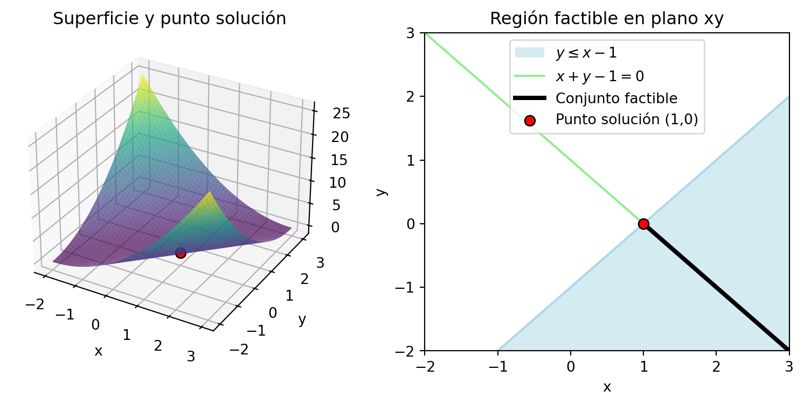

Una vez que hemos definido qué es un problema de optimización convexa, es natural preguntarse cómo se abordan estos problemas en la práctica. Afortunadamente, existen herramientas computacionales accesibles que permiten resolver problemas convexos de forma eficiente. En particular, en este curso utilizaremos dos librerías utilizadas en Python:
scipy.optimize: es una colección de algoritmos de optimización general, que incluye métodos para resolver problemas con restricciones lineales y no lineales, tanto convexos como no convexos. Es útil para ilustrar problemas sencillos y ver qué sucede cuando no se garantiza convexidad.
cvxpy: es una librería especializada en modelar y resolver problemas de optimización convexa. Permite expresar un problema con una sintaxis muy cercana a la notación matemática, y se encarga automáticamente de verificar si el problema es convexo y de seleccionar el solucionador adecuado.
A través de ejemplos concretos, veremos cómo utilizar estas herramientas para formular y resolver problemas de optimización. Esto también nos ayudará a motivar tanto el estudio de las condiciones de optimalidad como los métodos de optimización, que abordaremos en las proximas secciones, lo cual permitirá justificar porqué y cómo estas herramientas funcionan.
1 Sintaxis básica
1.1cvxpy
Pasos a seguir:
El uso básico de la librería cargada como cp es:
Definir las variables independientes con la clase cp.Variable.
Definir las restricciones.
Definir la función objetivo dentro de la clase cp.Minimize o cp.Maximize.
Definir el problema de optimización prob con la clase cp.Problem.
Resolver el problema con el método prob.solve().
Los siguientes ejemplos se encuentran disponibles en la guía de usuario de la librería.
Ejemplo 1 Resolveremos el problema de optimización convexa:
A continuación, vamos a representar geométricamente este problema: del lado izquierdo, el grafo en \(\RR^3\) de la función objetivo; del lado derecho, el conjunto factible como intersección de las restricciones dadas.
Mostrar código
import numpy as npimport matplotlib.pyplot as pltfrom matplotlib.patches import Patch# Función:def f(x, y):return (x - y)**2# Grid:x = np.linspace(-2, 3, 100)y = np.linspace(-2, 3, 100)X, Y = np.meshgrid(x, y)Z = f(X, Y)# Solución del problema:solucion =1,0valor_optimo = f(solucion[0],solucion[1])# GRÁFICAS:fig = plt.figure(figsize=(10, 4))## Funcion objetivo:ax1 = fig.add_subplot(121, projection='3d')ax1.plot_surface(X, Y, Z, cmap='viridis', alpha=0.7)ax1.scatter(solucion[0], solucion[1], valor_optimo, color='red', edgecolors='black', s=50)ax1.set_title('Superficie y punto solución')ax1.set_xlabel('x')ax1.set_ylabel('y')## Conjunto factible:ax2 = fig.add_subplot(122)ax2.set_xlim(-2, 3); ax2.set_ylim(-2, 3)x_line = np.linspace(-2, 3, 100)# Restricción de igualdad:ax2.plot(x_line, 1-x_line, color ='lightgreen', label='$x + y - 1 = 0$')# Restricción de desigualdad:yy, xx = np.meshgrid(np.linspace(-2, 3, 100), np.linspace(-2, 3, 100))ax2.contourf(xx, yy, yy <= xx -1, levels=[0.5, 1], colors=['lightblue'], alpha=0.5)ax2.plot(x_line, x_line-1, color='lightblue', linestyle='-')patch = Patch(facecolor='lightblue', edgecolor='none', alpha=0.5, label=r'$y \leq x - 1$')# Intersección de restricciones:x_aux = np.linspace(1,3,100)ax2.plot(x_aux, 1-x_aux, color ='black', linewidth =3, label ='Conjunto factible')# Punto solución:ax2.scatter(solucion[0], solucion[1], color='red', edgecolors='black', s=50, zorder=10, label='Punto solución (1,0)')#ax2.set_title('Región factible en plano xy')ax2.set_xlabel('x')ax2.set_ylabel('y')ax2.legend()ax2.legend(handles=[patch] + ax2.get_legend_handles_labels()[0])plt.show()

Ejemplo 2 Resolveremos el problema de optimización convexa:
con \(A\in\RR^{n\times m}\) y \(\bb\in\RR^m\) aleatorios, para \(n,m\in\mathbb{N}\) fijos.
1.2scipy.optimize
Pasos a seguir:
El uso básico de la librería scipy.optimize es:
Definir la función objetivo como una función de Python.
Definir las restricciones con las clases Bounds y LinearConstraint.
Proponer un punto inicial (guess) para las variables.
Resolver el problema con el método minimize.
El siguiente ejemplo se encuentra disponible en la documentación de la librería.
Ejemplo 3 La función de Rosenbrock es una función no convexa que se utiliza para evaluar el rendimiento de métodos de optimización numérica, debido a la dificultad para converger al valor mínimo. Para dos variables, está definida por \[
f(x,y)=(a-x)^2+b(y-x^2)^2,
\]
con \(a,b\in\RR\). En este ejemplo, consideraremos \(a=1\) y \(b=100\) y resolveremos el problema de optimización convexa:
Vamos a estudiar diversos tipos de problemas de optimización convexa y, en paralelo, su implementación mediante las librerías cvxpy y scipy.optimize. Organizaremos el contenido según categorías, siguiendo la clasificación del libro de Boyd.